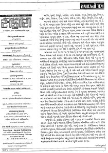

या नींव के पत्थर!!
आपमें से कितने लोगों ने डॉ नौतम भगवान लाल भट्ट का नाम सुना है? अच्छा अब बताइये आपने अग्नि, पृथ्वी, त्रिशूल, नाग, ब्रह्मोस,धनुष, तेजस, ध्रुव, पिनाका, अर्जुन, लक्ष्य, निशान्त, इन्द्र, अभय, राजेन्द्र, भीम, मैसूर, विभुति, कोरा, सूर्य.. आदि नाम सुने हैं? अब आप पहचान गये होंगे कि ये सब भारत के शस्त्र हैं। अब मैं एक और प्रश्न पूछना चाहूंगा कि कि इन सब शस्त्रों के साथ किसी सबसे पहले वैज्ञानिक का नाम जोड़ना हो तो आप किसका नाम जोड़ना पसन्द करेंगे? डॉ कलाम ही ना !! अगर मैं कहूं कि डॉ. अब्दुल कलाम से पहले डॉ नौतम भगवान लाल भट्ट का नाम जोड़ना ज्यादा सही होगा तो? आपको आश्चर्य होगा क्यों कि आज तक किसी ने डॉ साहब का नाम भी नहीं सुना।
मशहूर गुजराती मासिक पत्रिका सफारी ने सन् २००५ के अक्टूबर अंक के संपादकीय में संपादक श्री हर्षल पुष्पकर्णा जी ने जब पाठकों से यह प्रश्न पूछा था तब तक मैं भी डॉ साहब के नाम से अन्जान था। डॉ नौतम भट्ट का २००५ में देहांत हो गया था, और इतनी बड़ी शख्सियत के बारे में हम उनके निधन के बाद जान पाये कितना दुखद: है।
आपकी उत्सुकता बढ़ गई होगी.. आगे का विवरण में सफारी के शब्दों को ही अनुवाद करने की कोशिश कर रहा हूँ। हिन्दी- गुजराती में लिखने की शैली थोड़ी अलग होती है सो कहीं कहीं छोटी बड़ी गलती रह पाना संभव है। 

अग्नि, पृथ्वी, त्रिशूल, नाग, ब्रह्मोस,धनुष, तेजस, ध्रुव, पिनाका, अर्जुन, लक्ष्य, निशान्त, इन्द्र, अभय, राजेन्द्र, भीम, मैसूर, विभुति, कोरा, सूर्य.. इस सब शस्त्रों के नाम के साथ अगर किसी एक व्यक्ति का नाम जोड़ना हो तो शायद हमारे मन में ए. पी. जे. कलाम के अलावा दूसरा नाम याद नहीं आयेगा। कलाम के बाद अगर दूसरे नंबर पर जामनगर के नौतम भगवान लाल भट्ट का नाम अगर माना जाये तो? देखा जाये तो उनका नाम दूसरे स्थान पर उचित नहीं माना जाना चाहिये, क्यों कि भारत में सरंक्षण शोध की नींव रखने वाले या सरंक्षण के क्षेत्र में स्वावलंबन के लिये जरूरी संसाधन/ संशोधन के पायोनियर डॉ कलाम नहीं बल्कि डॉ नौतम भट्ट थे, और कुछ समय पहले आपका ९६ वर्ष की उम्र में देहांत हुआ तब इस दुखद घटना को हमारे समाचार माध्यमों ने अपने चैनलों- अखबारों में बताया भी नहीं। सरंक्षण के क्षेत्र में उनके अतुल्य- अनमोल योगदान को नमन करना तो दूर भारत में ( या गुजरात में) ज्यादातर लोगों ने उनका नाम भी नहीं सुना हो इसकी संभावना भी कम नहीं!
जामनगर में 1909 में जन्मे और भावनगर तथा अहमदाबाद में स्कूली शुरुआती शिक्षा के बाद में बैंगलोर की इन्डियन इंस्टीट्यूट ऑफ सायन्सिस में डॉ सी वी रमन के सानिध्य में फिजिक्स में MSc पास करने वाले नौतम भट्ट ने 1939 में अमेरिका की मेसेचुएट्स इन्स्टिट्यूट ऑफ टेक्नोलोजी में इसी विषय में डॉक्टरेट की पदवी हासिल की। भारत की आजादी के 2 वर्ष बाद डॉ भट्ट सरंक्षण विभाग में जुड़े और नई दिल्ली में डिफेन्स साइन्स लेबोरेटरी की स्थापना की। सेना के लिये रेडार संशोधन विभाग की भी स्थापना की, जिसमें वर्षों बाद नई पीढ़ी के वैज्ञानिक अब्दुल कलाम के नेतृत्व में बनने वाली डिफेन्स रिसर्च लेबोरेटरी और उसके बाद डिफेन्स एवं रिसर्च डेवलेपमेन्ट ओर्गेनाईजेशन (DRDO) के नाम से मानी जाने वाली थी। इस संस्था में 1960-65 की अवधि में स्वदेशी संरक्षण तकनीक (डिफेन्स टेक्नोलोजी) का विकास करने के लिये बम के फ्यूज, हीलीयम नियोन लेसर, सोनार, सेमी कन्डक्टर, चिप, रेडार आदि से संबधित शोध की गई वे सारी शोध नौतम भट्ट द्वारा डॉ कलाम जैसे युवा वैज्ञानिकों को दिये गये मार्गदर्शन की आभारी थी। कई शोधों को रक्षा मंत्रालय द्वारा मिलिटरी (सेना) के लिये गोपनीय वर्गीकृत (classified) माना क्यों कि उनकी गोपनीयता बरकरार रखनी बहुत ही आवश्यक थी। सरंक्षण के क्षेत्र में डॉ नौतम भट्ट ने संशोधकों-वैज्ञानिकों की एक फौज ही खड़ी कर दी थी जो भविष्य में अगिन, पृथ्वी एवं नाग जैसी मिसाइल्स और राजेन्द्र तथा इन्द्र जैसे रेडार, वायर गाईडेड टोरपीडो तथा एन्टी सबमरीन सोनार का निर्माण करने वाली थी। ध्वनिशास्त्र (acocstics) में डॉ भट्ट के अपार ज्ञान का लाभ सोनार डिजाईनर को मिला ही लेकिन दिल्ली में भारत के सर्वप्रथम 70mm के दो सिनेमा थियेटर ( ओडियन एवं शीला) के लिये आपने साऊंड सिस्टम तैयार की। मुंबई के बिरला मातुश्री सभागृह की 2000 वॉट के स्पीकर्स वाली साउंड सिस्टम भी डॉ भट्ट ने ही बनाई थी।
राष्ट्रपति डॉ जाकिर हुसैन के हाथों 1969 का पद्मश्री पुरुस्कार प्राप्त करने वाले डॉ भट्ट को भारत की डिफेन्स रिसर्च के भीष्म पितामाह के रूप में कितने लोग जानते हैं? लगभग कोई नहीं। इसका कारण है जेनेटिक्स के विशेषज्ञ डॉ हरगोविन्द खुराना, भौतिकशास्त्री चंद्रशेखर सुब्रमनियम, बेल टेलिफोन लेबोरेटरी के नियामक कुमार पटेल, अवकाश यात्री कल्पना चावला, रोबोटिक्स के प्रणेता राज रेड्डी आदि की तरह नौतम भट्ट भी अपना देश छोड़कर अमरीका में स्थायी हो गये होते तो आज उनका नाम भी गर्जना कर रहा होता, परन्तु भारत को रक्षा क्षेत्र में स्वावलम्बी बनाने की महत्वाकांक्षा को उन्होने खुद को हमारे लिये अंत तक अज्ञात ही रखा।
-हर्षल पुष्पकर्णा
जब मैने इन्टरनेट पर डॉ भट्ट के नाम को सर्च किया तो कई घंटों खोजने के बाद मात्र पद्मश्री पुरुस्कार की लिस्ट में उनका नाम मिला,इसके अलावा कहीं किसी भी भाषा में कोई जानकारी नहीं मिली।
सन् 2009 डॉ नौतम भगवान लाल भट्ट की जन्म शताब्दी का वर्ष है आप को हम नमन करते हैं।
पोस्ट की चर्चा अमर उजाला में ( सौजन्य से अजय कुमार झा एवं पाबला साहब)

_______________________________________________
Missiles